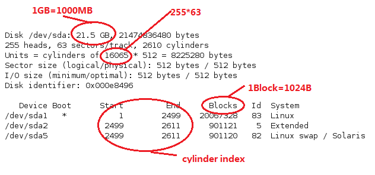
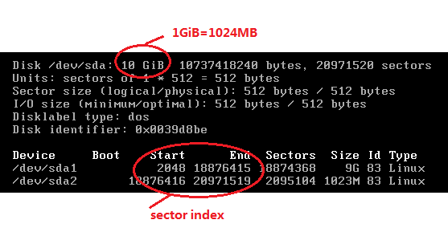
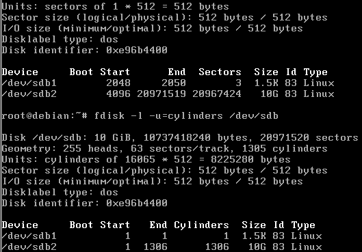

图1 盘片结构
图1中的一圈圈灰色同心圆为一条条磁道，从圆心向外画直线，可以将磁道划分为若干个弧段，每个磁道上一个弧段被称之为一个扇区（图中绿色部分）。扇区是磁盘的最小组成单元，通常是512字节。

图2 整体结构
图2展示了由一个个盘片组成的磁盘立体结构，一个盘片上下两面都是可读写的，图中蓝色部分叫柱面（cylinder）。
图2中磁盘是一个 3个圆盘6个磁头，7个柱面（每个盘片7个磁道） 的磁盘，图2中每条磁道有12个扇区，所以此磁盘的容量为6*7*12*512字节。
即：
柱面容量 ＝ 磁头数 × 每道扇区数 × 每扇区字节数
磁盘容量 ＝ 柱面容量 × 磁道(柱面)数
在老式磁盘中，尽管磁道周长不同，但每个磁道上的扇区数是相等的，越往圆心扇区弧段越短，但其存储密度越高。不过这种方式显然比较浪费空间，因此现代磁盘则改为等密度结构，这意味着外围磁道上的扇区数量要大于内圈的磁道，寻址方式也改为以扇区为单位的线性寻址。为了兼容老式的3D寻址方式，现代磁盘控制器中都有一个地址翻译器将 3D 寻址参数翻译为线性参数。

图3 fdisk 2.17.2版

图4 fdisk 2.25.2版
图3是以柱面为Unit显示的一个分区信息，图4是以扇区为Unit显示的一个分区信息，可以通过命令行参数-u=sectors，-u=cylinders来以两种方式显示。 扇区是分区的最小单位，如下图所示，分区大小为2个扇区

图5 以sector或cylinder为单位的分区信息